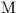

Next: SLA_DJCAL - MJD to Gregorian for Output
Up: SUBPROGRAM SPECIFICATIONS
Previous: SLA_DH2E - Az,El to
- ACTION:
- Multiply a 3-vector by the inverse of a rotation
matrix (double precision).
- CALL:
- CALL sla_DIMXV (DM, VA, VB)
- GIVEN:
-
| DM |
D(3,3) |
rotation matrix |
|---|
| VA |
D(3) |
vector to be rotated |
- RETURNED:
-
- NOTES:
- 1.
- This routine performs the operation:
b = M a
a
where a and b are the 3-vectors VA and VB
respectively, and M is the  matrix DM.
matrix DM.
- 2.
- The main function of this routine is apply an inverse
rotation; under these circumstances,  is
orthogonal, with its inverse the same as its transpose.
- 3.
- To comply with the ANSI Fortran 77 standard, VA and VB must
not be the same array. The routine is, in fact, coded
so as to work properly on the VAX and many other systems even
if this rule is violated, something that is not, however,
recommended.
Next: SLA_DJCAL - MJD to Gregorian for Output
Up: SUBPROGRAM SPECIFICATIONS
Previous: SLA_DH2E - Az,El to
SLALIB --- Positional Astronomy Library
Starlink User Note 67
P. T. Wallace
12 October 1999
E-mail:ptw@star.rl.ac.uk